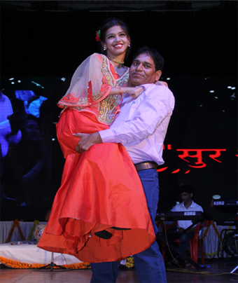

About Us
About Us

When everyone else says 'YOU CAN'T', "सुरश्री" SAYS 'YES YOU CAN'
MEGA SINGING COMPETITION- "SURSHREE"
Rotary globally unites more than a million people
Surshree is one of the biggest singing completions of India. It is the brand of Rotary distt. 3040 and is held annually at Bhopal.
Rotary is an international organization of around 1.2 Million business professionals and community leaders. Surshree provides a platform
for children all over India and became a popular name among youngsters who want to showcase their talent and music skills. Surshree started
as a school level singing completion where participants were from the 9’Th to 12’Th classes. The age limit to enter the competition was 15
to 21. To participate in the competition people need to send their video to the given whatsapp numbers, by which they will be shortlisted.
After that, they got selected for the quarter final, semi final and finally for the grand finale. The winner of surshree is decided by the
voting and performance at the grand finale The first season of “Surshree” was organized in the year 2015 and it was judged by famous
bollywood singer Vindod Rathod. After the success of first season surshree became a popular name among the music lovers especially among
kids who had the passion of singing. The consecutive seasons were well received by the audiences and it has been judged by famous music
personalities like Mahalaxmi Iyer (Season 2), Lalit Pandit (Season 2), Hema Sardesai (Season 3), Anand Ji (Season 3) and many more. After
every season, appreciation for surshree has grown steadily and it became more popular year by year. Surshree just completed its 5’Th season
in Dec 2019 and in the grand finale, celebrities like Anup Jalota, Poornima Shreshtha, Anand-Milind and Sanjeev Sachdeva has judged the show.
And with season 5, surshree became international singing competition. Now people around the globe can participate. Surshree help participants
to enhance their talent and their music skills. At every stage participants is mentored, groomed and guided by professionals. We help every
participant to fulfill their dream. There is no entry fee in surshree. Participants don’t have to pay a single penny on any level in surshree.
The Grand finale of season 6 of surshree will be held on 05 Dec 2020 and it will be grander and bigger than this time. In the upcoming season
6 the age limit to participate in this competition will be 15-25 (earlier it was 15-21). Surshree is committed to continue its legacy to organize
the world class music competition and it will also look after to shape the young music talents all over the world.